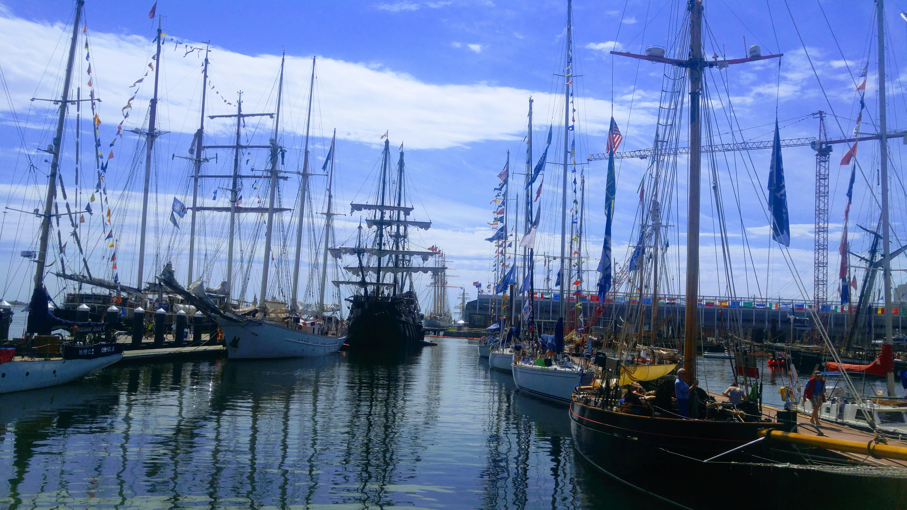
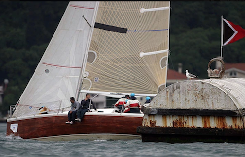

Personal
Sailing
Sailing is my passion, whether it’s racing or cruising. I hold a professional sailing license in my country (equivalent to ASA 106, Advanced Coastal Cruising). I had a chance to sail on the Charles River, Raritan Bay, and to visit Sail Boston back in 2017.


College Sports
I follow college sports closely. I am a huge fan of Boilermakers and Nittany Lions, particularly when it comes to football and basketball.